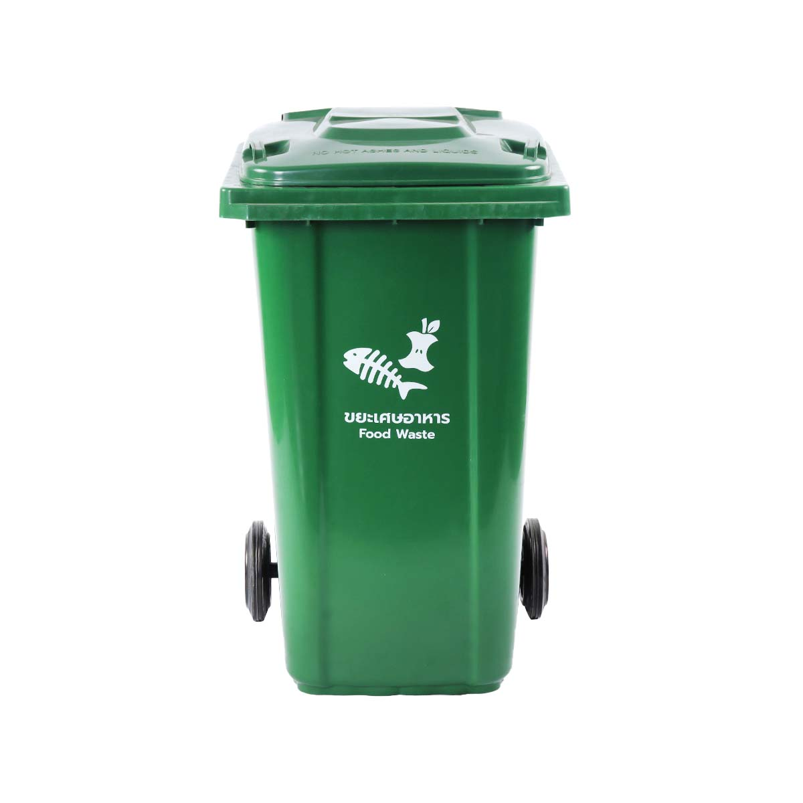
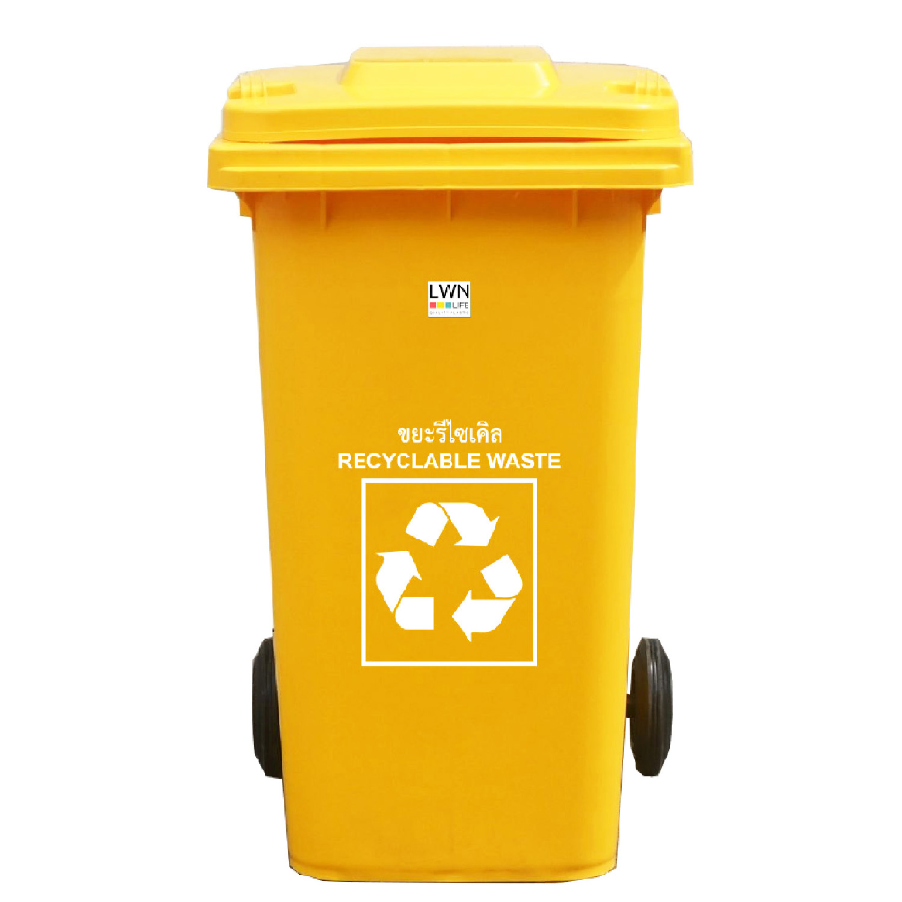
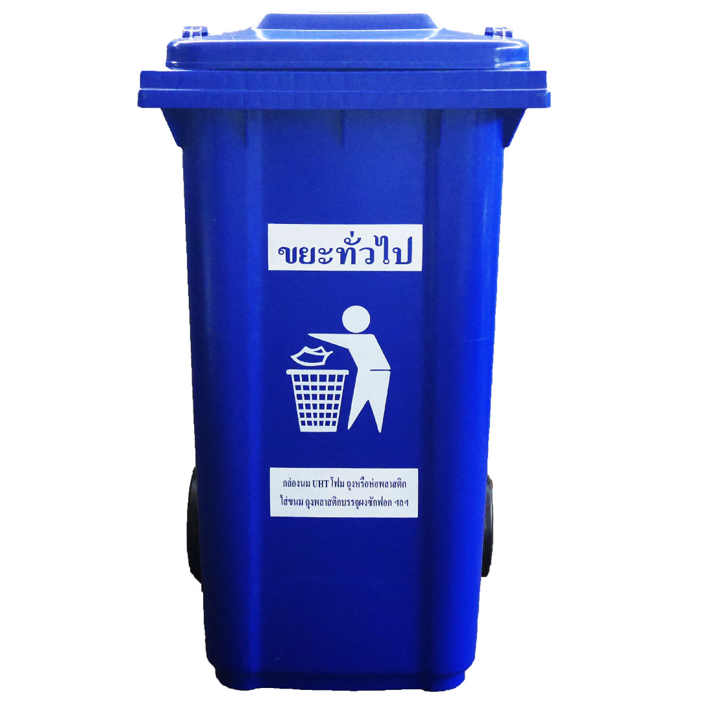
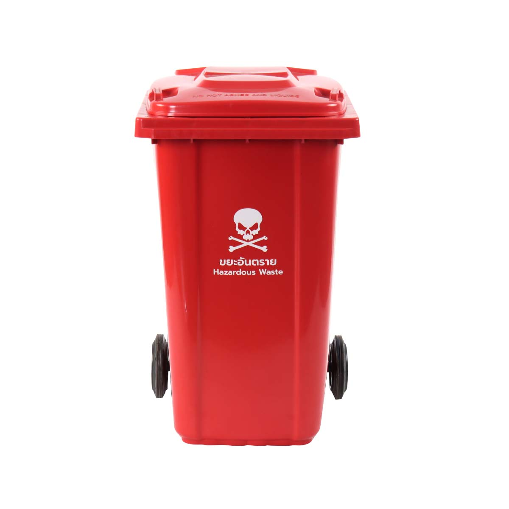

การคัดแยกขยะ
มีหลากหลายรูปแบบ แต่รูปแบบที่เราได้ศึกษาและจะนำเสนอทุกท่านก็คือ การลดโลกร้อนจากการแยกขยะ
การแยกขยะนั้นแบ่งเป็นสีและประเภทของขยะดังนี้ถังขยะ 4 ประเภทหลัก
| 1. ถังขยะสีเขียว ประเภทขยะอินทรีย์ ตัวอย่างขยะที่ทิ้ง เศษอาหาร/ใบไม้/เปลือกผลไม้ |  |
| 2. ถังขยะสีเหลือง ประเภทขยะรีไซเคิล ตัวอย่างขยะที่ทิ้ง ขวดพลาสติก/ขวดแก้ว/กระดาษ |
 |
| 3. ถังขยะสีน้ำเงิน ประเภทขยะทั่วไป ตัวอย่างขยะที่ทิ้ง ถุงพลาสติก/กล่องโฟม/ผ้าอ้อม |  |
| 4. ถังขยะสีแดง/เทา ประเภทขยะอันตราย ตัวอย่างขยะที่ทิ้ง ถ่านไฟฉาย/แบตเตอรี่/หลอดไฟ |  |
ประโยชน์หลักของการคัดแยกขยะ
ลดปริมาณขยะ: ช่วยลดปริมาณขยะที่ต้องนำไปฝังกลบหรือเผา ทำให้ขยะโดยรวมลดลงอย่างเห็นได้ชัด.
ประหยัดงบประมาณ: การลดปริมาณขยะทำให้หน่วยงานท้องถิ่นมีค่าใช้จ่ายในการจัดการขยะน้อยลง ซึ่งงบประมาณส่วนนี้สามารถนำไปพัฒนาด้านอื่นๆ ได้.
ลดการสิ้นเปลืองทรัพยากร: การนำวัสดุที่สามารถรีไซเคิลได้ เช่น แก้ว กระดาษ พลาสติก โลหะ กลับมาใช้ใหม่ จะช่วยลดการใช้ทรัพยากรธรรมชาติใหม่ๆ และประหยัดพลังงาน.
ลดมลพิษ: การกำจัดขยะที่ถูกวิธีช่วยลดมลพิษในดิน น้ำ และอากาศ รวมถึงลดความเสี่ยงต่อสุขภาพของคนงานและประชาชน.
สร้างรายได้: วัสดุรีไซเคิลสามารถนำไปขายเพื่อสร้างรายได้เสริมได้.
สร้างจิตสำนึกที่ดีต่อสิ่งแวดล้อม: การคัดแยกขยะเป็นการปลูกฝังนิสัยและความรับผิดชอบต่อสิ่งแวดล้อมให้แก่คนในสังคม.
การคัดแยกขยะทำได้อย่างไร
การใช้ถังขยะแยกประเภท: ควรมีถังขยะแยกตามประเภท เช่น ขยะเปียก/ย่อยสลายง่าย, ขยะรีไซเคิล, ขยะทั่วไป, และขยะอันตราย.
การเรียนรู้วิธีแยกขยะ: ทำความเข้าใจว่าขยะประเภทใดควรทิ้งในถังสีอะไร เพื่อให้การแยกเป็นไปอย่างถูกต้อง.
การนำขยะบางประเภทไปจัดการต่อ: เช่น การนำขยะอินทรีย์ไปทำปุ๋ยหมัก หรือขยะอันตราย เช่น แบตเตอรี่ หลอดไฟ ไปกำจัดอย่างถูกวิธี